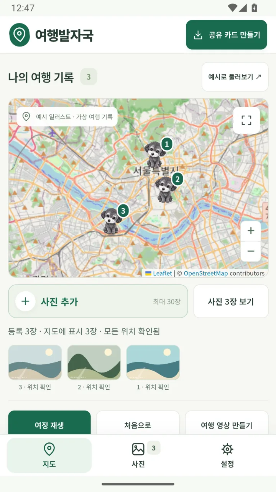
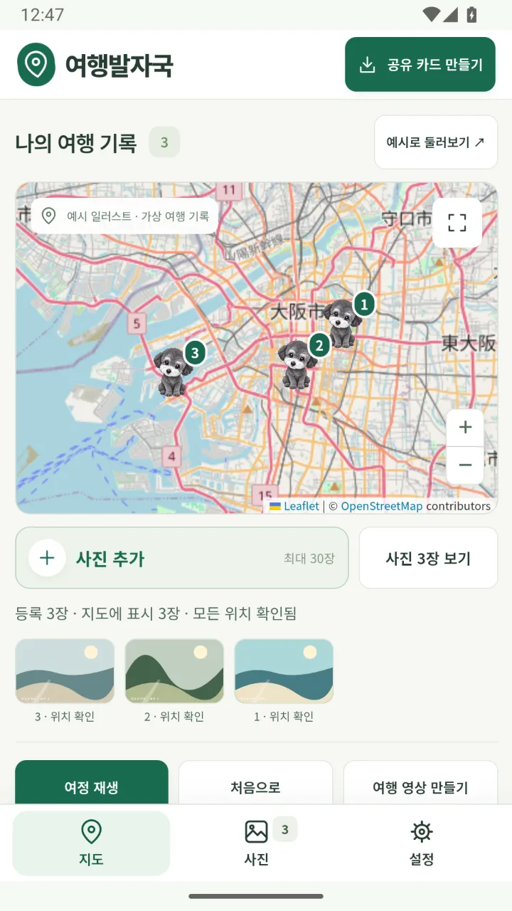
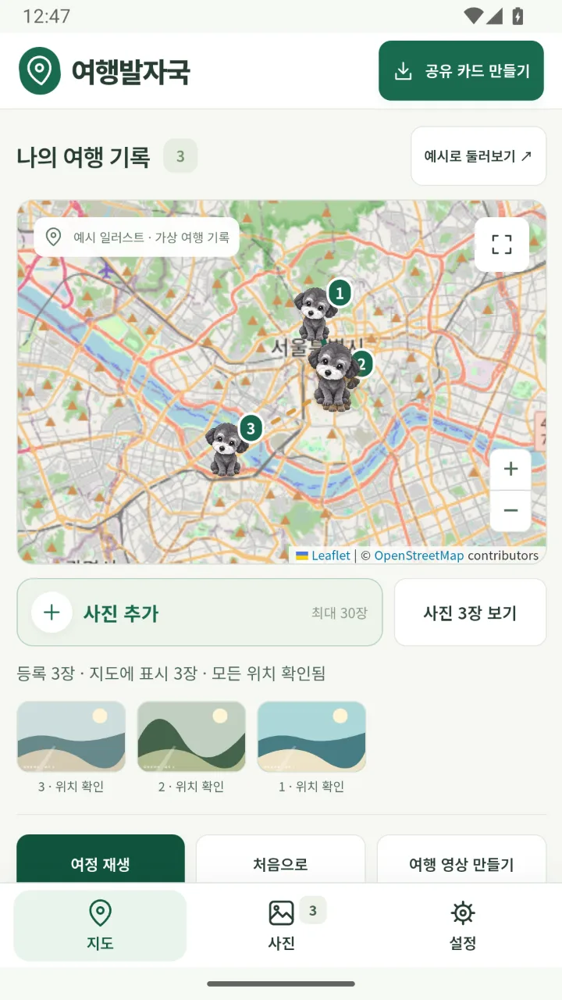
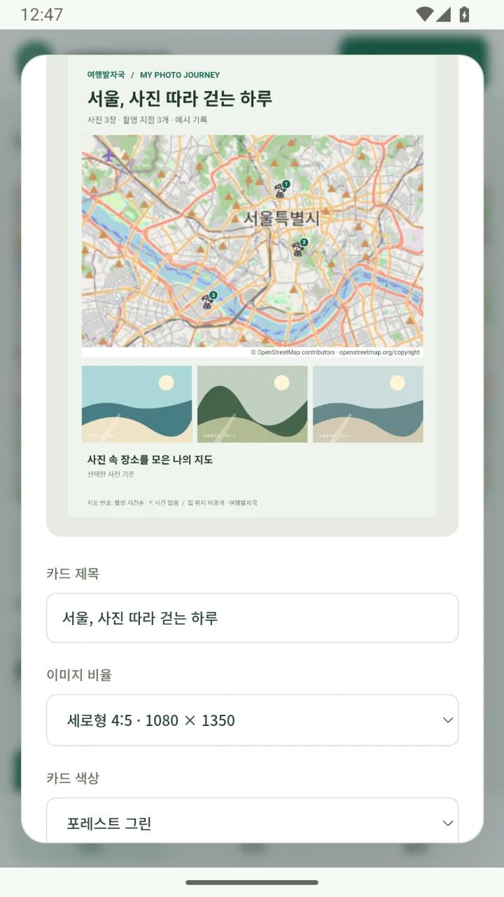
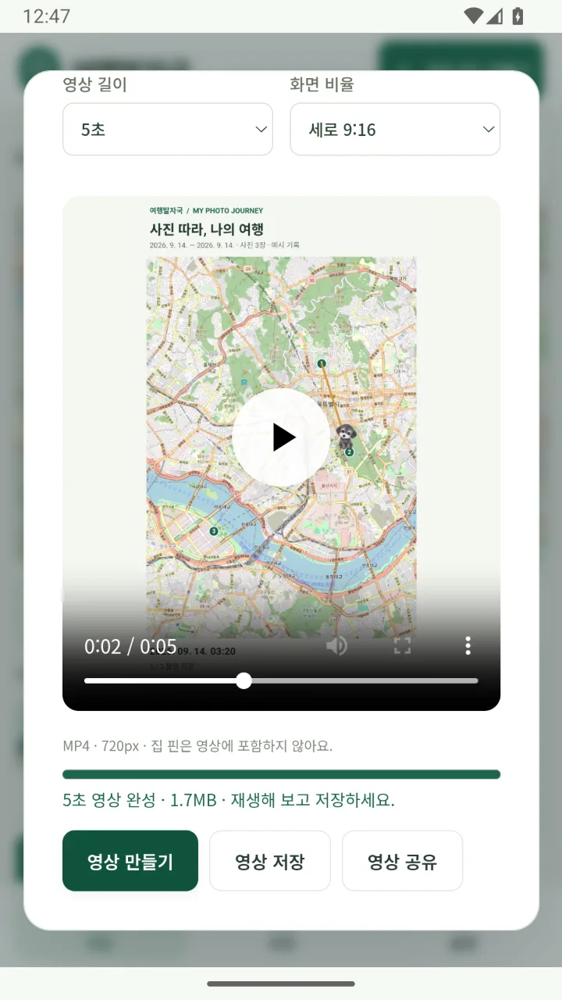
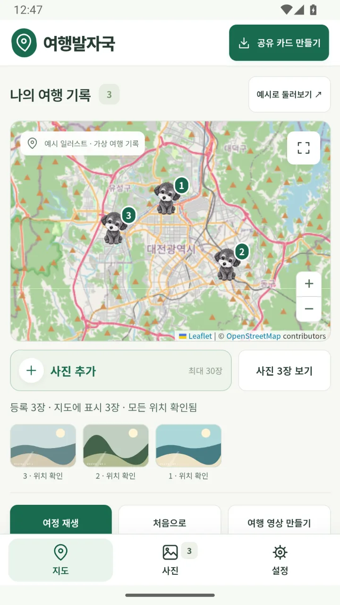
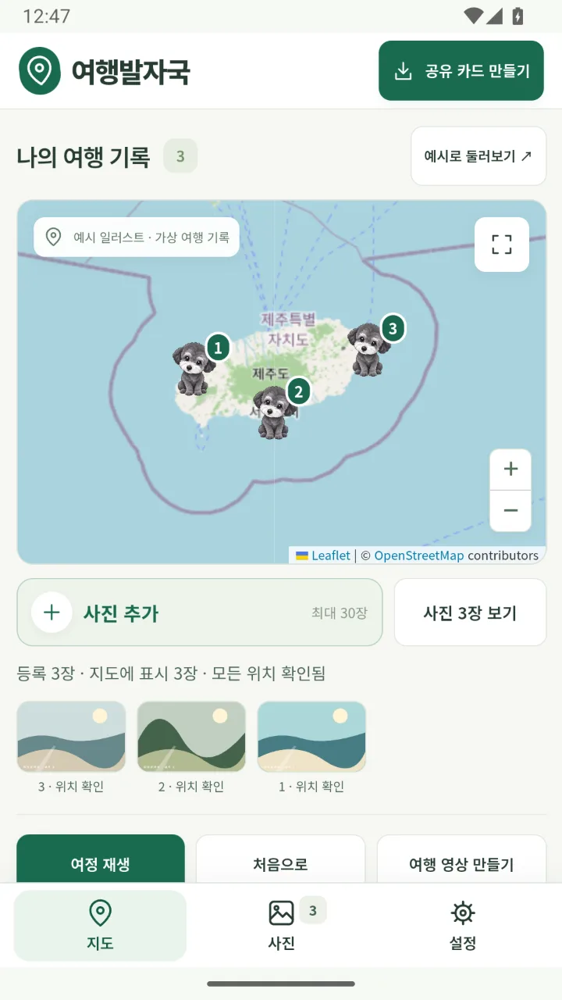
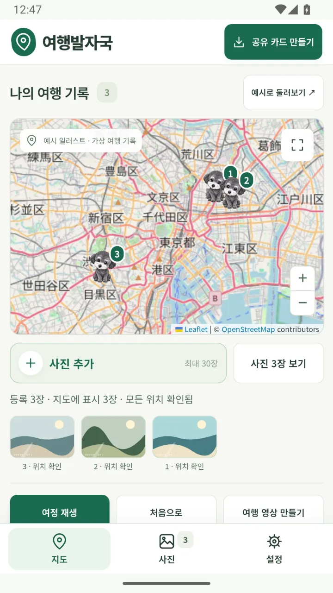

사진첩 속 여행을,
지도 위에서 다시
사진의 촬영 위치와 시간으로 다녀온 곳을 지도에 기록하고, 나만의 여행 카드와 짧은 영상으로 추억을 공유하세요. 동네 산책부터 해외 여행까지.
Android · Google Play 출시 · 무료회원가입 없음 · 사진과 여행 기록은 내 기기에만 저장

사진만 고르면,
나만의 여행지도가 됩니다
- 고르기여행 사진 선택
사진첩에서 여행 사진을 고르거나, 폴더를 연결해 새 사진을 가져와요.
- 기록지도에 자동 표시
사진에 담긴 GPS 위치로 촬영 장소를 지도에 찍어요. 위치가 없는 사진은 직접 지정해요.
- 공유카드와 영상으로
여행 카드나 5~30초 영상을 만들어 Android 공유 메뉴로 SNS 앱에 전달해요.
기록하고, 다시 걷고, 나누는 여행
다녀온 곳을
한눈에
선택한 사진의 위치정보로 촬영 장소를 지도에 표시해요. 지도에는 사진 대신 마크와 방문 번호가 보여요.
- 사진의 GPS 위치로 자동 표시
- 위치가 없는 사진은 지도에서 직접 지정
- 장소명과 메모, 촬영 위치와 시간 수정

시간순으로 이어지는
나의 발자취
촬영 시간순 번호로 방문 순서를 확인하고, 날짜와 시간대에 맞춰 여정을 재생해요.
- 촬영 시간순 방문 번호
- 날짜·시간대를 골라 여정 재생
- 촬영 지점을 잇는 표현이며, 실제 도로 경로나 위치 추적이 아니에요

여행 카드로
한 장에 담기
여행 날짜와 공유할 사진을 골라 카드를 만들어요. 제목, 색상, 템플릿과 대표 사진을 취향대로 꾸밀 수 있어요.
- 제목·색상·템플릿·대표 사진 선택
- 공유할 사진을 직접 고르기
- 공유 카드에는 집 위치를 넣지 않아요

짧은 영상으로
전하는 여행 이야기
지도 위를 따라 움직이는 5~30초 여행 영상을 만들어요. 완성한 파일은 Android 공유 메뉴로 바로 보낼 수 있어요.
- 720p 또는 1080p MP4
- 세로 9:16 · 정사각형 1:1
- 전체 지도 또는 장소별 확대 연출

내 취향대로, 오래 보관하도록
-
나만의 지도 마크
강아지 캐릭터와 여러 심볼 중에서 고르거나, 원하는 이미지를 불러와 마크로 써요.
-
여행별 앨범
여행마다 앨범을 나눠 이름을 붙여요. 여행당 사진 30장, 최대 100개 여행을 보관해요.
-
백업과 복원
여행 기록을 파일로 백업하고, 새 앨범으로 복원할 수 있어요.
-
폴더 연결
선택한 폴더를 연결하면 앱을 열거나 다시 돌아올 때 새 사진을 확인해 가져와요.
-
공유할 내용은 직접
특정 사진을 빼거나, 집 주변 1km 사진을 제외하고 촬영 시각을 숨길 수 있어요.
-
13개 언어·지역
한국어, 영어, 일본어, 중국어, 프랑스어, 스페인어 등 13개 언어·지역 설정으로 화면을 볼 수 있어요.
동네 산책부터 해외 여행까지
화면 속 사진과 여행은 예시 일러스트와 가상 기록입니다. 지도 © OpenStreetMap contributors
서울촬영 장소와 방문 번호 
대전동네 산책도 지도에 
제주도섬 여행을 한눈에 오사카해외 여행도 그대로 
도쿄도시 곳곳의 발자취 여정 재생촬영 시간순으로 다시 걷기 여행 카드제목·색상·템플릿 꾸미기 여행 영상5~30초 영상 저장·공유
옆으로 넘겨 더 보기 →
사진과 여행 기록은
내 기기에 보관됩니다
여행발자국은 계정 가입을 요구하지 않으며, 사진첩을 개발자가 운영하는 서버에 올리지 않습니다.
-
계정 없음
로그인 없이 설치하자마자 모든 기능을 쓸 수 있어요.
-
사진은 기기 안에서
축소한 사진 사본과 위치·시각은 앱 저장소에 두고, 서버로 보내지 않아요.
-
집 위치는 빼고 공유
카드와 영상에는 집 핀이나 집 좌표를 넣지 않아요.
-
광고에 사진은 넘기지 않아요
배너 광고가 있지만 사진, 사진 위치, 집 좌표, 메모는 광고 SDK에 전달하지 않아요. 별도 사용 분석 SDK도 없어요.
알아 두세요
- 지도는 OpenStreetMap 타일을 사용해요. 지도를 불러올 때 요청한 지도 영역과 IP 주소 등 통상적인 요청 정보가 OpenStreetMap에 전달되며, 인터넷 연결이 필요해요.
- 공유하는 카드와 영상에는 사진 내용, 지도에 나타난 촬영 장소와 시각이 보일 수 있어요. 공개하기 전에 결과를 확인해 주세요.
- Android 0.2.1 이상 버전은 AdMob 배너 광고를 표시하며, Google이 광고 제공과 측정을 위해 광고 ID 등 기기 정보를 처리할 수 있어요. 동의가 필요한 지역에서는 설정의 ‘광고 개인정보 설정’에서 선택을 바꿀 수 있어요.
- 기록은 기기에 저장되므로 기기를 바꾸거나 앱을 지우기 전에 여행 백업을 저장해 주세요.
문의와 기록 삭제 안내
문의
운영자: sdwdev
sdwdev89@gmail.com
앱 버전, 기기 모델과 문제 상황을 함께 알려주세요. 지원에 필요한 정보만 보내고, 개인 사진이나 정확한 집 위치는 보내지 않아도 됩니다.
앱 계정은 없으며 여행 기록은 기기에 저장됩니다. 이메일 문의 자료의 열람·정정·삭제는 위 주소로 요청할 수 있습니다.
기록 삭제와 백업
- 앱에서 사진을 개별 삭제하거나 현재 여행의 사진을 모두 비울 수 있습니다.
- 설정에서 저장된 집 위치·내 이미지 마크를 지우고 폴더 연결을 해제할 수 있습니다.
- 앱의 모든 내부 기록을 지우려면 Android 설정에서 앱 저장공간의 데이터를 삭제하거나 앱을 제거하세요. 필요한 여행은 먼저 백업해 주세요.
- 외부에 저장한 백업·카드·영상 및 SNS 게시물은 해당 위치나 서비스에서 별도로 삭제하세요.
자주 묻는 질문
사진이 지도에 표시되지 않아요.
사진에 GPS가 없거나 공유 과정에서 제거되었을 수 있습니다. 원본 사진을 선택하거나 지도에서 위치를 직접 지정하세요.
폴더에 사진을 추가했는데 반영되지 않아요.
앱을 열거나 다시 돌아올 때 연결한 폴더의 새 사진을 확인합니다. 하위 폴더와 앱 종료 중 상시 감시는 지원하지 않습니다.
지도는 실제 이동 경로인가요?
사진 촬영 지점을 연결한 기록입니다. 실제 도로 경로나 실시간 위치 추적 기록이 아니며 지도 로딩에는 인터넷이 필요합니다.
무료인가요?
무료이며 인앱 구매는 없습니다. Android 0.2.1 이상 버전에는 배너 광고가 표시됩니다.
휴대폰을 바꾸면 여행 기록은 어떻게 하나요?
기존 휴대폰에서 여행 백업 파일을 저장한 뒤, 새 휴대폰의 여행발자국에서 새 앨범으로 복원하세요. 백업에는 집 위치와 폴더 연결 정보가 포함되지 않습니다.
Record your travels. Share your memories.
Build a personal travel map from your photos’ locations and capture times. Replay visits in order, create travel cards and 5–30-second videos, customize your map marker, and organize trip albums with manual backups.
Contact support
Developer: sdwdev
sdwdev89@gmail.com
Please include your app version, device model and a description of the problem. Send only information needed for support; personal photos or your exact home location are not required.
Delete records and manage backups
- Delete individual photos or clear photos in the current trip.
- Clear your saved home location, remove a custom marker and disconnect folders in settings.
- To erase all internal records, clear the app’s storage in Android settings or uninstall it. Back up any trips you want to keep first.
- Delete exported backups, cards, videos and social posts separately from their destination.
The app has no accounts; trip records stay on your device. Email the address above to request access, correction or deletion of support correspondence.
Common questions
Why is a photo missing from the map?
Its GPS data may be missing or removed during sharing. Choose the original photo or set its location manually.
When are new folder photos imported?
The app checks the connected folder when opened or resumed. Subfolders and continuous monitoring while the app is closed are not supported.
Is the map an actual recorded route?
It connects photo capture locations. It is not road navigation or real-time location tracking. Loading maps requires an internet connection.